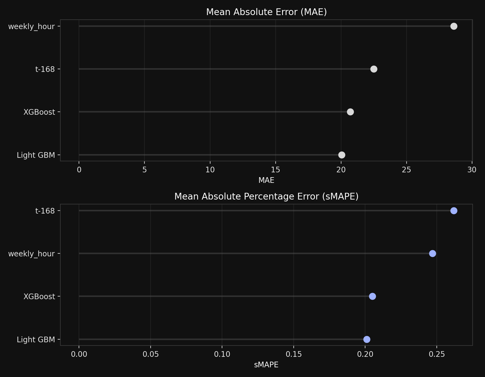
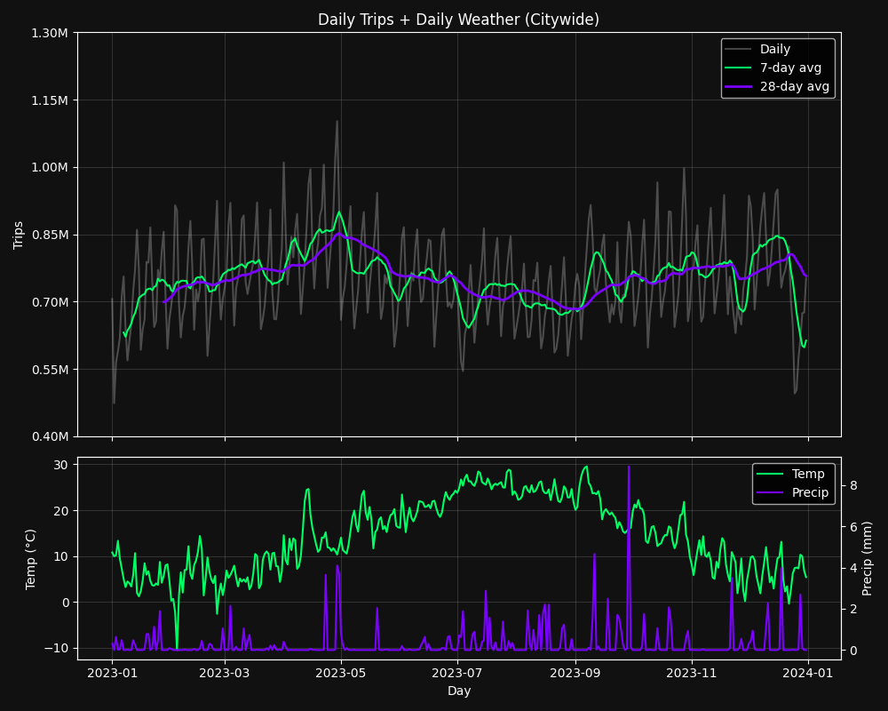

Method
Forecasts are generated hourly using a LightGBM regression model trained on 2023-2024 TLC demand with weather and calendar features. The model predicts 48 hours ahead for every taxi zone.
Model Benchmarks
Quick comparison of the baselines vs. tuned LightGBM and XGBoost. Lower error indicates better performance on the validation window.
Global Feature Impact
SHAP beeswarm plot showing which inputs most influence predictions. It highlights calendar patterns and weather effects at a glance.

Trips vs. Weather
Citywide daily demand with 7-day and 28-day smoothing above, and temperature vs. precipitation below for seasonal context.
